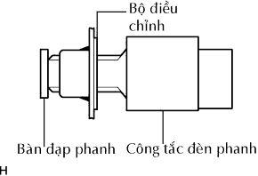
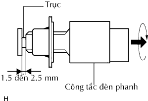
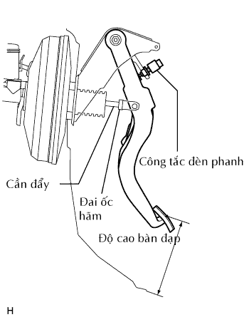

CÔNG TẮC ĐÈN PHANH > LẮP |
| 1. LẮP CỤM CÔNG TẮC ĐÈN PHANH |
|  |
Lắp bộ điều chỉnh vào giá đỡ.
Lắp công tắc vào bộ điều chỉnh cho đến khi nó chạm nhẹ vào bàn đạp.
|  |
Vặn công tắc 1/4 vòng theo chiều kim đồng hồ.
Lắp giắc công tắc với công tắc.
Kiểm tra khe hở công tắc.
| 2. CHỈNH CỤM CÔNG TẮC ĐÈN PHANH |
|  |
Kiểm tra chiều cao bàn đạp.
Điều chỉnh chiều cao bàn đạp.
Tháo giắc nối công tắc đèn phanh.
Tháo công tắc.
Nới lỏng đai ốc hãm chạc chữ U của cần đẩy.
Điều chỉnh độ cao bàn đạp bằng cách vặn cần đẩy.
Xiết chặt đai ốc hãm.
Lắp công tắc vào bộ điều chỉnh cho đến khi nó chạm nhẹ vào bàn đạp.
Vặn công tắc 1/4 vòng theo chiều kim đồng hồ.
Lắp giắc nối vào công tắc.
Kiểm tra khe hở công tắc.
| 3. NỐI CÁP ÂM ẮC QUY |
| 4. TIẾN HÀNH THIẾT LẬP BAN ĐẦU |
Tiến hành thiết lập ban đầu (Xem trang Kích chuột vào đây).